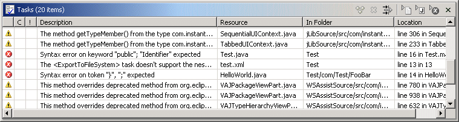
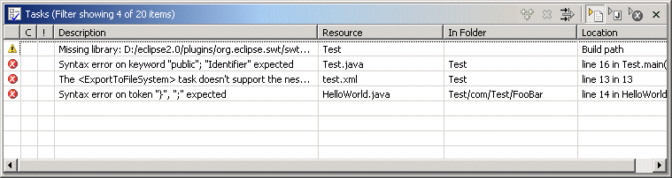
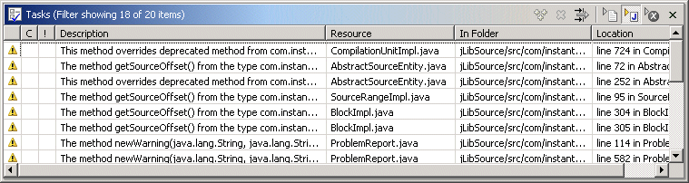
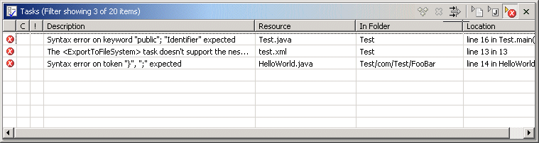

Task Quick Filters

The standard Application Developer/Eclipse Task view displays the following information:
- Auto-generated errors, warnings, or information associated with a specific resource.
- Tasks that have been added by the user. A task may be associated with a resource, or it may be global.
The problem with the task view is that it is a one-stop-shop for too many kinds of unrelated information. It does provide a complex filter dialog that can be used to filter the contents of the dialog, but it is quite cumbersome to use. In order to make the task view easier to use, CodePro adds several "quick filters" to the task view's toolbar.
Each of these filters may be used by themselves or in combination.
 Resource quick filter
Resource quick filter

The resource quick filter causes the task list to only show the tasks associated with a specific resource and its children. Holding down the shift key when invoking this filter, will limit the tasks to the specific resource only. Holding down the alt key will limit the tasks to the specific project only.
 Java quick filter
Java quick filter

The java quick filter causes the task list to only show Java-related problems. Holding down the shift key will limit the list to problems of any type (not just Java problems). Holding down the alt key will limit the list to only show task items (like todo items).
 Severity quick filter
Severity quick filter

The severity quick filter causes the task list to only show errors and high priority tasks and hide warnings, info messages and medium or low priority tasks. Holding the shift key down will only show warnings or medium priority tasks. The alt key will show only errors and warnings and high or medium priority tasks.